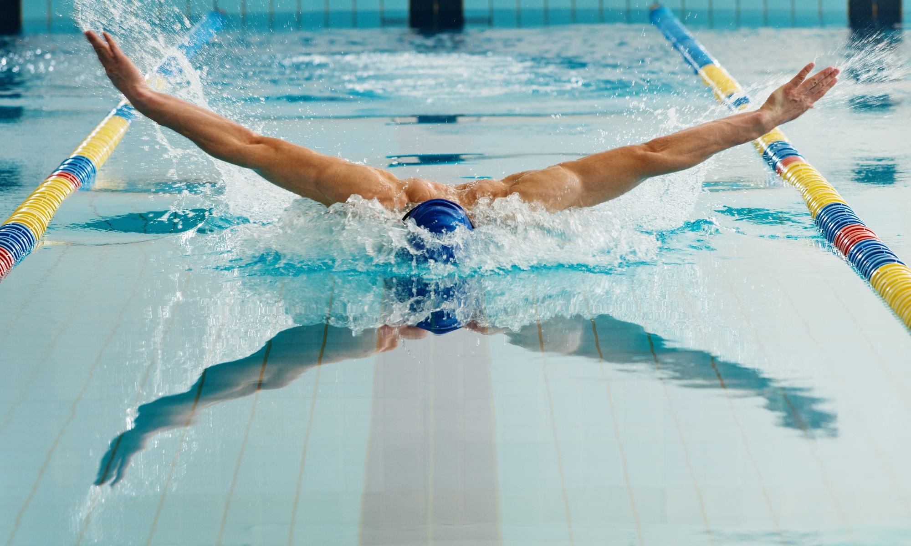

Il delfino è uno stile di nuoto caratterizzato da un movimento simultaneo delle braccia e delle gambe che ricorda il movimento di un delfino nell'acqua. In questo stile, il nuotatore si trova in posizione prona, con il corpo orizzontale sulla superficie dell'acqua. Le braccia si muovono simultaneamente sopra la superficie dell'acqua, spingendo il corpo in avanti, mentre le gambe eseguono un movimento ondulatorio simultaneo. Questo stile richiede una buona coordinazione tra braccia e gambe, nonché una notevole forza e resistenza muscolare. Il delfino è uno degli stili più impegnativi del nuoto, ma offre anche una grande velocità e potenza.

Il delfino è uno stile di nuoto spesso utilizzato nelle competizioni e richiede una tecnica precisa per massimizzare l'efficienza del movimento nell'acqua. I nuotatori che praticano il delfino devono sviluppare una buona flessibilità, forza muscolare e resistenza cardiovascolare per eseguire correttamente questo stile. Inoltre, il delfino è uno stile che coinvolge molti gruppi muscolari, inclusi i muscoli delle spalle, delle braccia, del core e delle gambe, rendendolo un allenamento completo per tutto il corpo.
Le gare che comprendono questo stile sono: